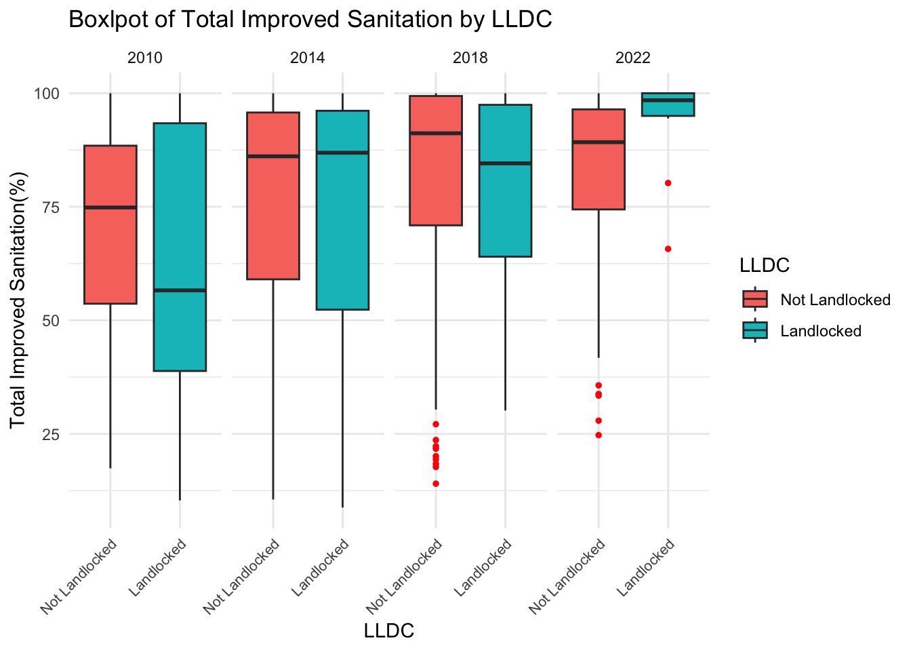
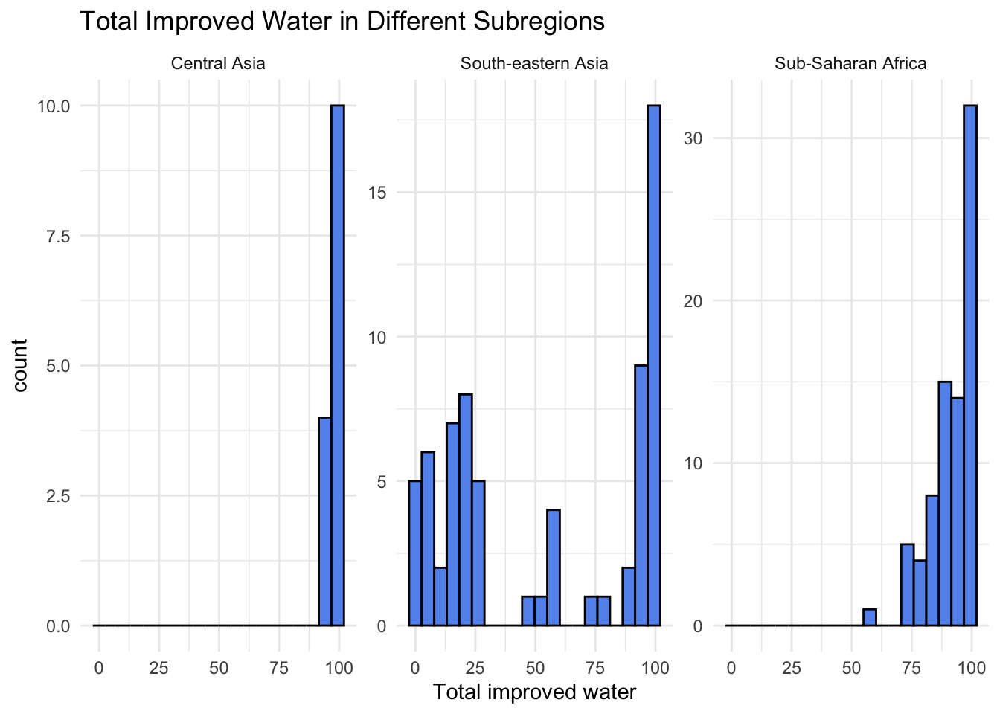
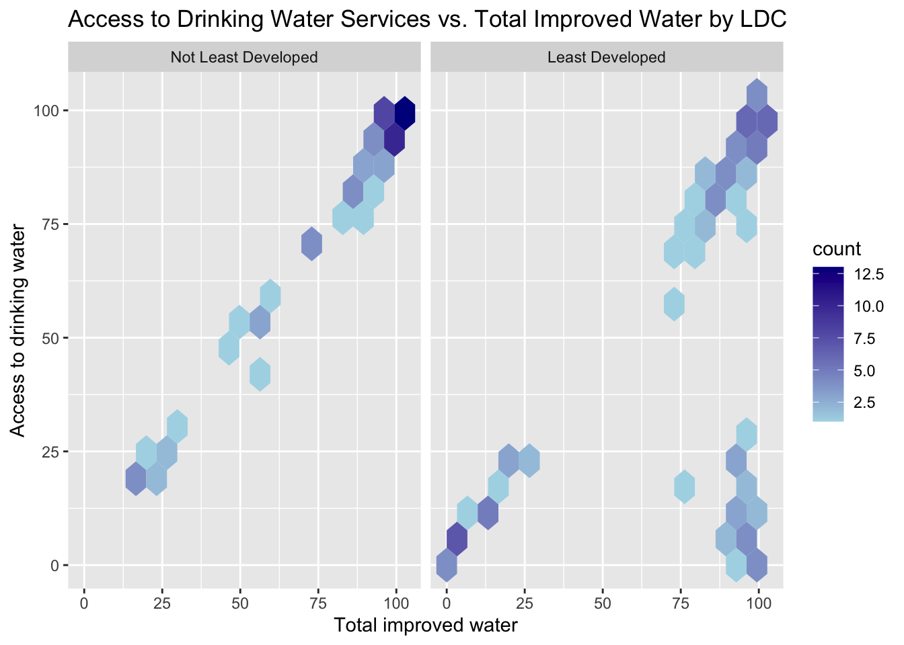
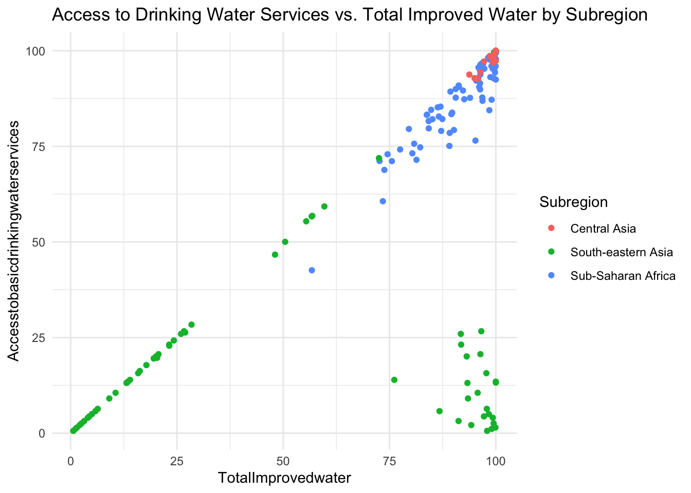
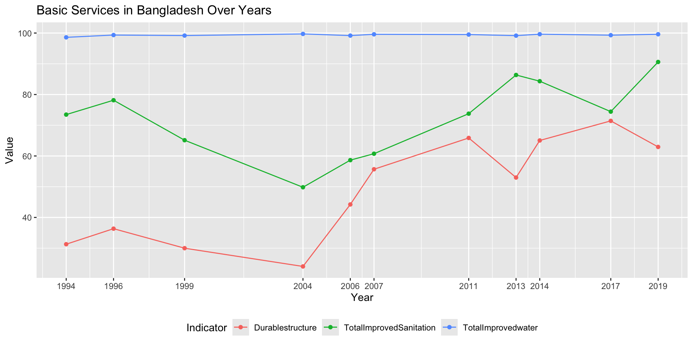
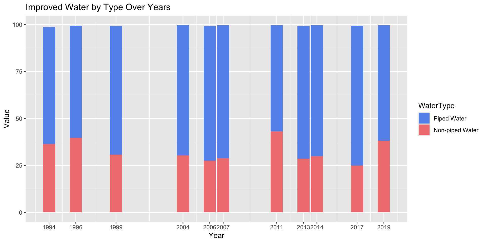
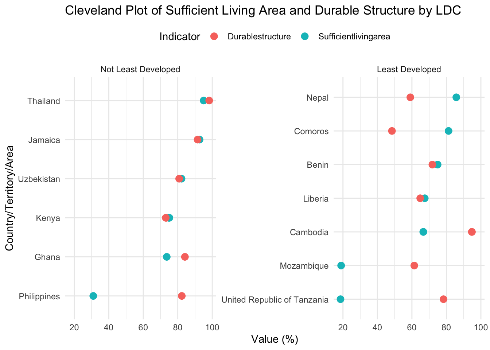
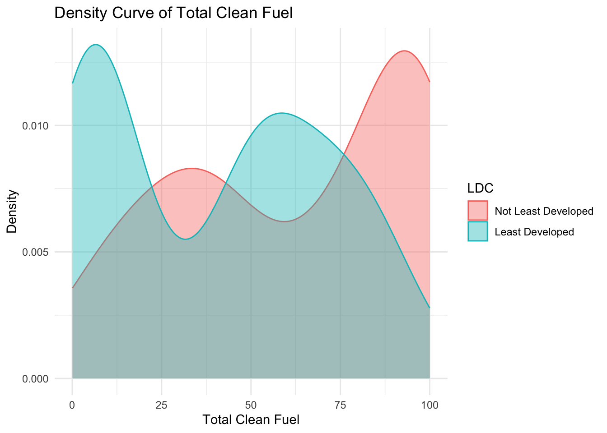
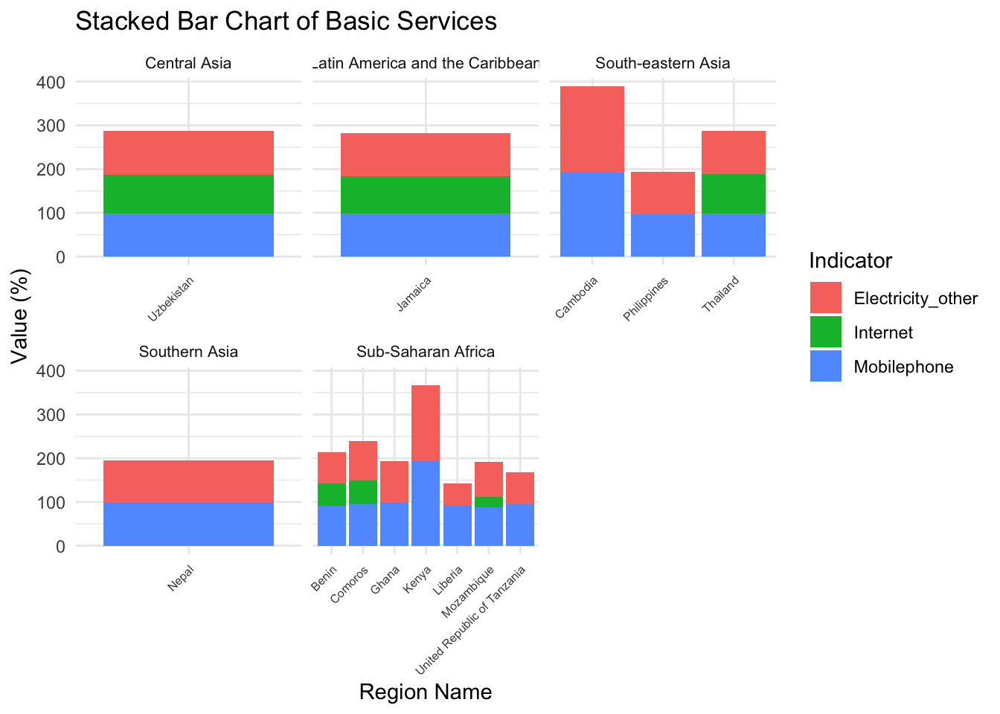

data <-read_excel("data/BasicService.xlsx")data$LDC <-as.factor(data$LDC)data$LDC <-fct_recode(data$LDC,"Least Developed"="1","Not Least Developed"="0")data$LLDC <-as.factor(data$LLDC)data$LLDC <-fct_recode(data$LLDC,"Landlocked"="1","Not Landlocked"="0")data$SIDS <-as.factor(data$SIDS)data$SIDS <-fct_recode(data$SIDS,"Island"="1","Not Island"="0")data2022R <-filter(data,`National/SubNationalClassification`=='Region'&Year=='2022')
3.1 Total Improved Sanitation by LLDC
Code
data1 <- data |>filter(`National/SubNationalClassification`=="Region", Year %in%c(2010,2014,2018,2022))ggplot(data1, aes(x=factor(LLDC), y=`TotalImprovedSanitation`, fill =factor(LLDC)))+geom_boxplot(outlier.color ="red", outlier.size =1)+facet_wrap(~Year, nrow =1) +labs(title ="Boxlpot of Total Improved Sanitation by LLDC",x="LLDC",y ="Total Improved Sanitation(%)",fill ="LLDC" )+theme_minimal() +theme(axis.text.x =element_text(size =8,angle =45, hjust =1), )
Warning: Removed 1 row containing non-finite outside the scale range
(`stat_boxplot()`).

From 2010 to 2022, both landlocked and non-landlocked countries improved their sanitation coverage, with non-landlocked countries showing more significant progress. In 2010, non-landlocked countries had a higher median and narrower distribution, indicating more consistent coverage. By 2014, the median for landlocked countries improved but still showed significant regional disparities, with some areas lagging behind. By 2022, the median for non-landlocked countries reached nearly 100%, demonstrating high consistency, while landlocked countries still exhibited a wider range of coverage, reflecting greater disparities.
3.2 Total Improved Water By Subregion
Code
data2022R |>ggplot(aes(x = TotalImprovedwater)) +geom_histogram(fill ="cornflowerblue", color ="black", bins =20) +facet_wrap(vars(SubregionName),scales ="free_y") +labs(title ='Total Improved Water in Different Subregions', x ='Total improved water') +theme_minimal()
Warning: Removed 2 rows containing non-finite outside the scale range
(`stat_bin()`).

Central Asia: Most regions have a very high volume of improved water, approaching 100%. This indicates that improved water coverage is generally high in Central Asia.
South-eastern Asia: The distribution in this region is various, with the amount of improved water ranging from low to high. The improved water supply is very low in some areas (close to 0%) and very high in others (close to 100%). This indicates that there is a wide variation in the coverage of improved water sources across different regions in South-eastern Asia. While some regions have made significant progress in water resource improvement, others may still face severe challenges.
Sub-Saharan Africa: All improved water resources are greater than 50%, with some approaching 100%. This indicates that the majority of regions is doing well, with a small number of regions still able to further increase the amount of improved water resources.
3.3 Access to Drinking Water vs. Total Improved Water by LDC
Code
data2022R |>ggplot(aes(x = TotalImprovedwater, y = Accesstobasicdrinkingwaterservices)) +geom_hex(bins =15) +facet_wrap(~ LDC) +scale_fill_gradient(low ="lightblue", high ="darkblue")+labs(title ='Access to Drinking Water Services vs. Total Improved Water by LDC',x ='Total improved water',y ='Access to drinking water')
Warning: Removed 4 rows containing non-finite outside the scale range
(`stat_binhex()`).

Not Least Developed Country: Access to basic drinking water services and improved water resources are directly proportional in non-LDCs, and many of them have high levels, with only a few at low levels.
Least Developed Country: Access to basic drinking water services and improved water resources are proportional in most of the LDCs. However, there are some regions where even with high levels of improved water resources, access to basic drinking water services are still low, indicating that many people in these regions still do not have access to water within a short distance. And the overall level is not high.
This also shows that there is a relationship between access to drinking water and the level of development of the country, with the least developed countries having smaller access to drinking water.
3.4 Access to Drinking Water vs. Total Improved Water by Subregion
Code
data2022R |>ggplot(aes(x = TotalImprovedwater, y = Accesstobasicdrinkingwaterservices, color = SubregionName)) +geom_point() +labs(title ='Access to Drinking Water Services vs. Total Improved Water by Subregion',color ='Subregion') +theme_minimal()
Warning: Removed 4 rows containing missing values or values outside the scale range
(`geom_point()`).

We continued to explore access to drinking water in different subregions based on the previous question. We find that those regions with low access to drinking water even though they have high improved water resources are located in South-eastern Asia.
Central Asia: Regions located in Central Asia have high levels of improved water and access to drinking water resources approaching 100%.
Sub-Saharan Africa: Access to drinking water resources and improved water resources are proportional in Sub-Saharan Africa, with the overall level slightly lower than in Central Asia, but also at a higher level.
South-eastern Asia: The proportion of accessible drinking water resources is low in many regions and not proportional to the amount of improved water resource. This means that many South-eastern Asia regions not only need to increase the volume of improved water, but also work to increase access to the improved water resources that are already available.
3.5 Access to Different Basic Services in Bangladesh
Code
dataBGD <- data |>filter(`National/SubNationalClassification`=='National'&`Country/Territory/AreaName`=='Bangladesh') |>select(Year, TotalImprovedwater, TotalImprovedSanitation, Durablestructure, Totalpiped, Totalnonpiped, Connectiontosewerage, Totalnonsewered)dataBGD |>pivot_longer(cols = TotalImprovedwater:Durablestructure,names_to ='Indicator', values_to ='Value') |>ggplot(aes(x = Year, y = Value, color = Indicator, group = Indicator)) +geom_line() +geom_point()+scale_x_continuous(breaks = dataBGD$Year) +labs(x ="Year", y ="Value", color ="Indicator",title ='Basic Services in Bangladesh Over Years')+theme(legend.position ="bottom")

Total Improved water: Improved water resources in Bangladesh have been maintained at a very high level close to 100% from 1994 to 2019, indicating that Bangladesh has been performing well in improving water resources for a long time.
Total Improved Sanitation: The level of improved sanitation has been volatile, first rising and then falling, reaching its lowest level in 2004 and then gradually recovering to reach its highest level in 2019. This indicates that Bangladesh is still making efforts to improve sanitation and has had better results in recent years.
Durable Structure: The overall levels of durable structure are lower than sanitation improvements. The trends of durable housing structures and improved sanitation conditions are very similar, both initially increasing and then decreasing, reaching their lowest levels in 2004, before beginning to rise again. However, after the initial recovery, the durable structures experienced two more fluctuations, with the highest level reached in 2017.
3.6 Improved Water in Bangladesh by Water Type
Code
dataBGD |>pivot_longer(cols = Totalpiped:Totalnonpiped,names_to ='WaterType', values_to ='Value') |>ggplot(aes(x = Year, y = Value, fill = WaterType)) +geom_bar(stat ="identity", position ="stack") +scale_x_continuous(breaks = dataBGD$Year) +scale_fill_manual(values =c("cornflowerblue", "lightcoral"),labels =c("Piped Water", "Non-piped Water"))+labs(title ="Improved Water by Type Over Years")

In the previous question we found that Bangladesh is doing well in improving water resources, and we further explored how well it is doing for different type of water resources.
Although the overall improved water resources are close to 100% every year, the improvement in piped and non-piped water is not the same. The proportion of improved piped water is greater than that of non-piped water every year. Even in 2011, when the proportion of non-piped water was the highest, it was still less than 50%.
3.7 Sufficient Living Area and Durable Structure by LDC
Code
data7 <-filter(data, `National/SubNationalClassification`=="National", Year ==2022) |>arrange(Sufficientlivingarea)data7_long <- data7 |>select(`Country/Territory/AreaName`, LDC, Sufficientlivingarea, Durablestructure) |>pivot_longer(cols =c(Sufficientlivingarea, Durablestructure),names_to ="Indicator",values_to ="Value" ) |>mutate(`Country/Territory/AreaName`=factor(`Country/Territory/AreaName`, levels =unique(data7$`Country/Territory/AreaName`)))ggplot(data7_long, aes(x = Value, y =`Country/Territory/AreaName`, color = Indicator)) +geom_point(size =3) +facet_wrap(~ LDC, scales ="free_y") +labs(title ="Cleveland Plot of Sufficient Living Area and Durable Structure by LDC",x ="Value (%)",y ="Country/Territory/Area",color ="Indicator" ) +theme_minimal() +theme(legend.position ="top")

This figure shows that non-least developed countries generally have higher values for both indicators, with most exceeding 80%. In contrast, least developed countries have lower overall values, with a wider range from 20% to nearly 100%. Some countries, like the Philippines, show significantly lower values for Sufficient Living Area compared to others. Most countries exhibit similar performance in Durable Structure and Sufficient Living Area, with non-least developed countries showing greater consistency between the two indicators. For example, Thailand and Uzbekistan have nearly overlapping values, demonstrating balanced performance.
This chart shows that in non-least developed countries, Africa has a high proportion of low clean fuel accessibility, close to the expected value. Asia’s low clean fuel accessibility is significantly higher than expected (blue area), highlighting a severe reliance on low clean fuel levels. Meanwhile, Asia’s high clean fuel accessibility is significantly lower than expected (red area), indicating a substantial gap in clean fuel infrastructure development.
In least developed countries, Africa dominates with an extremely high proportion of low clean fuel accessibility (dark blue area), far exceeding expectations. In contrast, Asia has a smaller proportion of low clean fuel accessibility, but regions with high clean fuel accessibility are almost nonexistent.
Overall, low clean fuel accessibility prevails in Africa. Accelerating the development of clean fuel infrastructure is critical for least developed countries, particularly in Asia.
3.9 Total Clean Fuel by LDC
Code
data9 <- data2022Rggplot(data9, aes(x = Totalcleanfuel, color =factor(LDC), fill =factor(LDC))) +geom_density(alpha =0.4) +labs(title ="Density Curve of Total Clean Fuel",x ="Total Clean Fuel",y ="Density",color ="LDC",fill ="LDC" ) +theme_minimal()
Warning: Removed 19 rows containing non-finite outside the scale range
(`stat_density()`).

The figure indicates a dispersed distribution of clean fuel coverage, with both non-least developed and least developed countries exhibiting two peaks. In non-least developed countries, coverage is primarily concentrated in the high range, with a higher density peak. The distribution is spread more in least-developed countries, with a significantly low coverage range and the highest peak below 25%. This shows that while both groups display a bimodal distribution, non-least developed countries generally have higher overall coverage, whereas least developed countries show greater variability.
3.10 Basic Services by Subregion
Code
data10 <-filter(data, `National/SubNationalClassification`=="National", Year ==2022)data10_long <- data10 |>select(SubregionName, `Country/Territory/AreaName`, Mobilephone, Electricity_other, Internet) |>pivot_longer(cols =c( Mobilephone, Electricity_other, Internet),names_to ="Indicator",values_to ="Value" )ggplot(data10_long, aes(x=`Country/Territory/AreaName`, y = Value, fill = Indicator)) +geom_bar(stat ="identity", position ="stack") +facet_wrap(~SubregionName, scales ="free_x") +labs(title ="Stacked Bar Chart of Basic Services",x ="Region Name",y ="Value (%)",fill ="Indicator" ) +theme_minimal() +theme(axis.text.x =element_text(size =6,angle =45, hjust =1),strip.text =element_text(size =8), )
Warning: Removed 9 rows containing missing values or values outside the scale range
(`geom_bar()`).

The chart shows that Central Asia (Uzbekistan), Latin America and the Caribbean (Jamaica), and Southern Asia (Nepal) have relatively high coverage rates. In Sub-Saharan Africa, the coverage varies significantly, with notable differences between countries. Mobilephone services dominate in most countries, indicating a high level of accessibility to this infrastructure. Electricity coverage varies greatly across countries, with higher proportions in some (e.g., Kenya and Jamaica) and lower in others (e.g., Mozambique and Liberia). Internet have relatively low shares, indicating limited adoption as primary basic services in most countries.